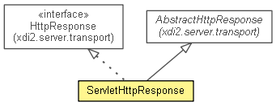

xdi2.server.servlet
Class ServletHttpResponse
java.lang.Object
 xdi2.server.transport.AbstractHttpResponse
xdi2.server.servlet.ServletHttpResponse
xdi2.server.transport.AbstractHttpResponse
xdi2.server.servlet.ServletHttpResponse
- All Implemented Interfaces:
- HttpResponse
public class ServletHttpResponse
- extends AbstractHttpResponse
- implements HttpResponse

| Methods inherited from class java.lang.Object |
clone, equals, finalize, getClass, hashCode, notify, notifyAll, toString, wait, wait, wait |
fromHttpServletResponse
public static ServletHttpResponse fromHttpServletResponse(javax.servlet.http.HttpServletResponse httpServletResponse)
getHttpServletResponse
public javax.servlet.http.HttpServletResponse getHttpServletResponse()
setStatus
public void setStatus(int sc)
- Specified by:
setStatus in interface HttpResponse
setContentType
public void setContentType(String type)
- Specified by:
setContentType in interface HttpResponse
setContentLength
public void setContentLength(int len)
- Specified by:
setContentLength in interface HttpResponse
setHeader
public void setHeader(String name,
String value)
- Specified by:
setHeader in interface HttpResponse
sendRedirect
public void sendRedirect(String location)
throws IOException
- Specified by:
sendRedirect in interface HttpResponse
- Throws:
IOException
sendError
public void sendError(int sc,
String msg)
throws IOException
- Specified by:
sendError in interface HttpResponse
- Throws:
IOException
getBodyWriter
public Writer getBodyWriter()
throws IOException
- Specified by:
getBodyWriter in interface HttpResponse
- Throws:
IOException
getBodyOutputStream
public OutputStream getBodyOutputStream()
throws IOException
- Specified by:
getBodyOutputStream in interface HttpResponse
- Throws:
IOException
Copyright © 2013. All Rights Reserved.